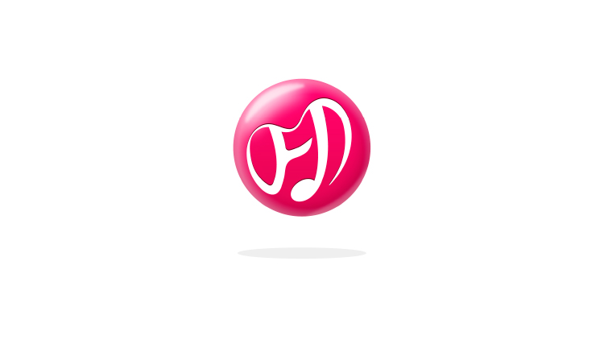
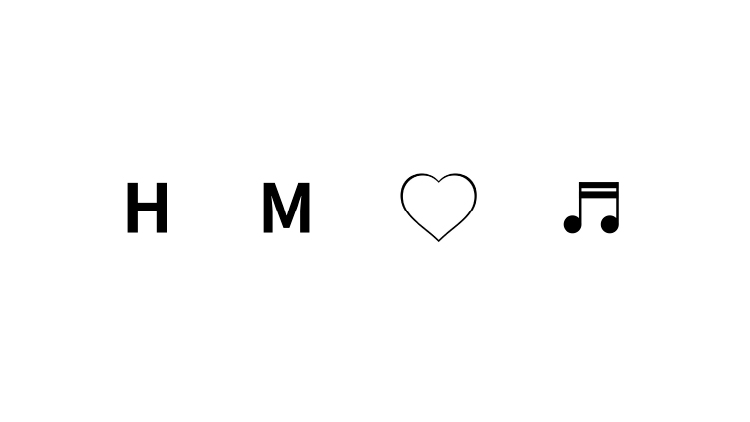
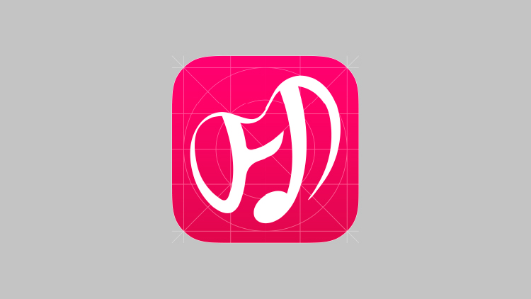
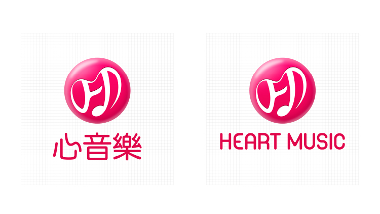
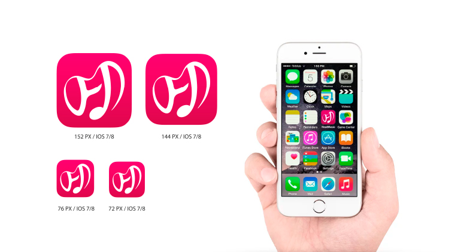

APP LOGO - HEART MUSIC VI
APP識別 - 心音樂識別設計
【設計思考】
未來，聽音樂不再只是被動的選擇，替代主動而貼心的服務，線上音樂APP“心音樂”將被動化為主動，在對的時間提供最適合您的音樂，讓音樂不再只是撫慰慰人心
，更能聰明的貼近你的心，「心音樂」就像管家一樣，最懂你的心。
【設計解決方案】
以「Ｈ。Ｍ」為字首的品牌名稱，用最流暢舒適的線條，環繞著一個心字。除了對音樂的執著，對使用者「有心」更是HEARTMUSIC品牌最重要的價值，我們隨便
著你/妳「心情」跳動，跟著你／妳的「感受」前進，最真實的「跟隨您的心」。
伯納始終保持著一顆聆聽與同理的心，結合對於設計的喜愛與熱忱，在每一個廣告設計的案件中都付出百分百的細心與創意。
SHARE ON




